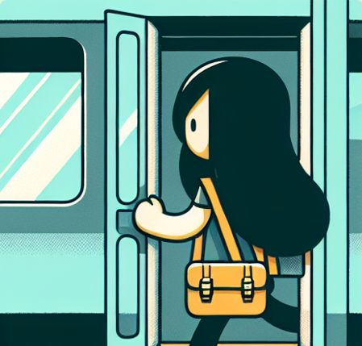

1. 出租车价格出租车的运价通常由当地政府规定，包括起步价、公里单价及等候费用等。 有时也会根据不同时段（如高峰时段、节假日）制定不同的价格政策。 2. 打车方式除传统的路边招手外，也可以在滴滴出行，高德地图，百度地图等网约车平台选择更灵活的网约车方式出行。 3. 车辆要求中卫没有私家网约车，均为外观为姜黄色的官方出租车，受到当地交通部门的定期检查和监督，以确保安全和服务质量。 可通过举报热线反映出租车运营中的问题。

ZHY为常白，长白及长夜均提供了班车服务 参考下列班车路线以及时间~ 常白：各公交站出发时间-ZHY18：00站点 长白：各公交站出发时间-ZHY21：00站点接送 长白：各公交站出发时间-ZHY21：00站点接送